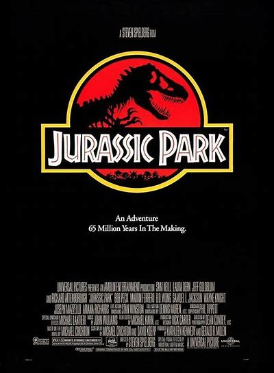

About
I'm a movie fanatic that has probably learned more from movies than school. Maybe I would have retained more from school if my brain wasn't already full of movies. Either way, I have decided to put together a list of some of my favorite movies of all time split into five all-encompassing genres (sorry in advance to the horror fans, you don't get your own category). While I could go on and on about movies and list many more, I made myself stick to five movies per genre. Hopefully viewers can find a few new movies from my recommendations. Enjoy!
|  |